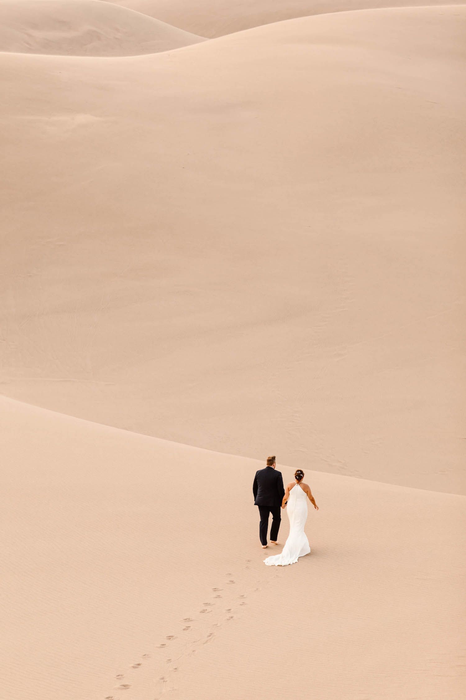
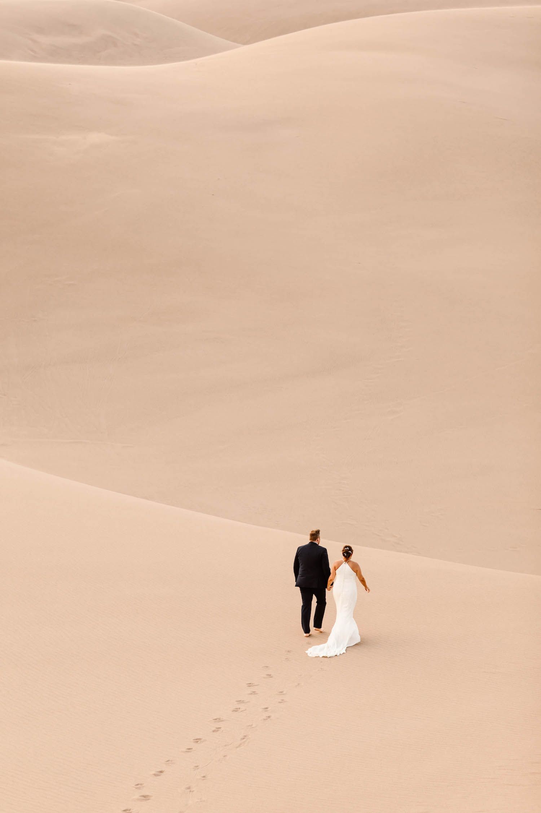

All About My Day Job - Documenting Elopements
I specialize in documenting adventurous weddings in outdoors locations. This page is a little
sneak peek into what my days look like.
The Life of an Elopement Photographer
By night, I'm a student, but by day, I'm what's called an adventure elopement photographer.
So what exactly is that? Essentially, I photograph couples who have chosen to get married in
adventurous locations with no guests present (or a small number of guests). It's what we in
the wedding industry lovingly refer to as adventure elopements.
There are a number of things that go into my job, as it's a bit different than what your
traditional wedding photographer might do. Here's a sample of the services I offer to my
clients:
- I help all my couples find an epic and adventurous spot to say their vows
- I craft complete timelines for their elopement day, from start to finish
- I provide vendor recommendations, including everything from flowers to dresses
- I provide my couples with over 100 pages worth of planning guides and resources
- And that's just the icing on the cake (pun intended!)
Curious What an Elopement Day Looks Like?
Adventurous elopements are a strange concept to most people, but they're some of the most
incredible types of weddings, if you ask me! At their core, my couples want their elopements to
be a true representation of their relationship and the things they love to do together. As I tend
to work with very outdoorsy couples, a component of adventure is ever-present on these elopement
days. My couples turn their wedding day into a full day of exploration and adventure, and when
they look back on the photos of their day, that's exactly what they get: that moment frozen in time
forever. As they say, a picture is worth a thousand words (cheesy, I know!), so here are some
photos of some of my couples, so you can get a feel for what it is that I do.
Frequently Asked Elopement Questions
Why do couples choose to elope?

There is a misconception in the wedding industry that couples choose to elope either for
price reasons or because they aren't close with their families. Nothing could be farther from
the truth. In fact, most of the couples I work with are aiming to have a luxury experiences,
but rather than focusing on "things," they want to put the focus on adventure. Ultimately, they
want their wedding day to be about having incredible experiences, rather than pleasing a room
full of guests.
How long does an elopement typically last?
This is another very misunderstood topic in the wedding industry. There is an impression people
have of elopements: that they are hurried, secretive events that may only last an hour or two.
In reality, most eloping couples are dedicating anywhere between 4 - 12 hrs of a day to their
wedding day activities.
How much does the average elopement cost?
Elopement costs vary quite a bit. Some couples opt not to have any vendors involved, and simply
get married at the cost of a marriage license. However, most of the couples I work with are investing
tens of thousands of dollars into a full-day, adventurous experience. This includes myself as the
photographer, lodging and travel fees, food (whether it's a picnic or private chef), etc.


 
